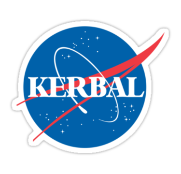
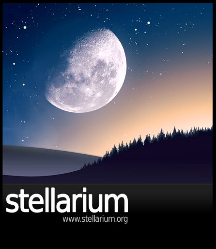

Cytat Carla Sagana na dziś:
Ilekroć myślę o tych odkryciach, czuję dreszcz podziwu, a moje serce zaczyna bić szybciej. Nie mogę się temu oprzeć. Nauka jest zachwytem i rozkoszą.(...) Niemal każdy naukowiec w chwili
odkrycia lub nagłego zrozumienia, doświadczył pełnego czci podziwu. Nauka – czysta nauka, nauka nie wykorzystywana do jakiegokolwiek praktycznego celu, ale dla siebie samej – budzi silne emocje u osób ją
uprawiających, jak również u tych nienaukowców, którzy od czasu do czasu próbują zapoznać się z tym, co zostało niedawno odkryte.

Nazwa Kerbal Space Program
Link: Kliknij mnie!
Rok wydania: 2015
Krótki opis:
Jest to gra, a nie typowy program przeznaczony do eksploracji kosmosu. Gracz wciela się w przedstawiciela dumnej rasy Kerbali żyjących na Kerbinie. Celem gry jest zbudowanie rakiety i wysłanie Kerbińskich
astronautów w kosmos.

Nazwa:Stellarium
Link: Kliknij mnie!
Rok wydania: 2001
Krótki opis:
Darmowy program astronomiczny na licencji GPL, który służy do realistycznej symulacji wyglądu gwiezdnego nieba. Wykorzystuje on bibliotekę OpenGL. Obsługiwane systemy to:
Linux,
BSD,
Windows oraz
Mac OS X